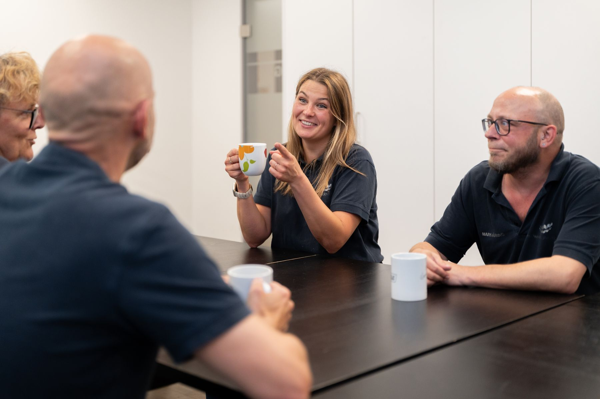

Unsere Partner
Puchmayr Dentaltechnik arbeitet mit Oralchirurgen, Herstellern und Beratern zusammen, die das Labor fachlich und technisch voranbringen.
Zusammenarbeit für beste Ergebnisse
Auf dem Weg zu den besten Lösungen, Materialien und Erkenntnissen für Sie und Ihre Patienten ist Puchmayr Dentaltechnik eine stabile und vertrauensvolle Zusammenarbeit sehr wichtig. Mit diesen Partnern arbeitet das Labor seit Jahren zusammen.
-
Oralchirurgie
Dr. Michael Petschler
Für Dr. Petschler fertigt Puchmayr Dentaltechnik seit Jahren Bohrschablonen. So ist das Labor von Anfang an in die Planung von Implantaten eingebunden.
oralchirurgen.berlin (öffnet in einem neuen Fenster) -
CAD/CAM-Frässystem
Zirkonzahn
Das 5-Achs-CAD/CAM-Frässystem bringt moderne Fertigungstechnik und neue Materialien ins Labor. Neue Anwendungen in der Prothetik stehen damit auch Ihnen als Behandler zur Verfügung, und wir beraten Sie gern beim Einsatz.
zirkonzahn.de (öffnet in einem neuen Fenster) -
Management und Datenschutz
Proxi
Partner für zertifizierte Managementsysteme, Organisations- und Prozessberatung, Innovationsberatung 4.0 und Datenschutz.
proxi.de (öffnet in einem neuen Fenster) -
Dentalmaterialien
GC Europe
Puchmayr Dentaltechnik verwendet Produkte der Firma GC Europe.
gc.dental (öffnet in einem neuen Fenster) -
3D-Druck
Shera
Partner für den 3D-Druckprozess im Labor.
shera.de (öffnet in einem neuen Fenster)
Noch Fragen?
Gerne stehen wir Ihnen telefonisch oder persönlich zur Verfügung, bei einem Termin in Ihrer Praxis oder bei uns im Labor in Berlin-Steglitz.